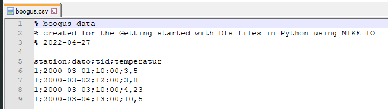

Pandas#
import pandas as pd
cities = {'name': ["Copenhagen", "London"],
'population': [1.5, 11.2],
'dist_to_coast': [0.0, 2.3]}
df = pd.DataFrame(cities)
df
| name | population | dist_to_coast | |
|---|---|---|---|
| 0 | Copenhagen | 1.5 | 0.0 |
| 1 | London | 11.2 | 2.3 |
df[df.name=='London']
| name | population | dist_to_coast | |
|---|---|---|---|
| 1 | London | 11.2 | 2.3 |
df.population.mean()
6.35
Get row by number#
df.iloc[0]
name Copenhagen
population 1.5
dist_to_coast 0.0
Name: 0, dtype: object
df.iloc[1]
name London
population 11.2
dist_to_coast 2.3
Name: 1, dtype: object
Get row by name (named index)#
df = df.set_index('name')
df
| population | dist_to_coast | |
|---|---|---|
| name | ||
| Copenhagen | 1.5 | 0.0 |
| London | 11.2 | 2.3 |
df.loc["London"]
population 11.2
dist_to_coast 2.3
Name: London, dtype: float64
df.index
Index(['Copenhagen', 'London'], dtype='object', name='name')
df.columns
Index(['population', 'dist_to_coast'], dtype='object')
We can transpose the dataframe, (rows -> columns)
df.T
| name | Copenhagen | London |
|---|---|---|
| population | 1.5 | 11.2 |
| dist_to_coast | 0.0 | 2.3 |
df.loc["London"].population
11.2
Delimited files#
Delimited files, separated by comma, semi-colon, tabs, spaces or any other special character, is a very common data format for tabular data. Comma separated value (csv) files can be read by the pandas read_csv function. It is a very powerful function, with a lot of options. It is very rare, that you have to write your own python function to parse csv files.
Below is an example of csv file:

Header with comments
Columns are separated with semi-colon (;)
Decimal separator is (,)
Date and time are in separate columns
There is a redundant station column
The column names are not in english
df = pd.read_csv("data/boogus.csv",
comment="%",
sep=";",
decimal=",",
parse_dates=[["dato","tid"]],
usecols=[1,2,3])
df
/tmp/ipykernel_2424/477751268.py:1: FutureWarning: Support for nested sequences for 'parse_dates' in pd.read_csv is deprecated. Combine the desired columns with pd.to_datetime after parsing instead.
df = pd.read_csv("data/boogus.csv",
| dato_tid | temperatur | |
|---|---|---|
| 0 | 2000-03-01 10:00:00 | 3.50 |
| 1 | 2000-03-02 12:00:00 | 3.80 |
| 2 | 2000-03-03 10:00:00 | 4.23 |
| 3 | 2000-03-04 13:00:00 | 10.50 |
Most functions in Pandas returns a copy, so even though the below line, looks like it changes the name, since it is printed to the screen, the df variable is not changed.
df.rename(columns={"temperatur": "air_temperature"})
| dato_tid | air_temperature | |
|---|---|---|
| 0 | 2000-03-01 10:00:00 | 3.50 |
| 1 | 2000-03-02 12:00:00 | 3.80 |
| 2 | 2000-03-03 10:00:00 | 4.23 |
| 3 | 2000-03-04 13:00:00 | 10.50 |
df # not modfied
| dato_tid | temperatur | |
|---|---|---|
| 0 | 2000-03-01 10:00:00 | 3.50 |
| 1 | 2000-03-02 12:00:00 | 3.80 |
| 2 | 2000-03-03 10:00:00 | 4.23 |
| 3 | 2000-03-04 13:00:00 | 10.50 |
df_new_name = df.rename(columns={"temperatur": "air_temperature"})
df_new_name
| dato_tid | air_temperature | |
|---|---|---|
| 0 | 2000-03-01 10:00:00 | 3.50 |
| 1 | 2000-03-02 12:00:00 | 3.80 |
| 2 | 2000-03-03 10:00:00 | 4.23 |
| 3 | 2000-03-04 13:00:00 | 10.50 |
Inline exercise
Calculate the min and max tempterature by selecting the
air_temperaturecolumn from thedf_new_namedataframe like this:df_new_name.air_temperatureand call the .min()andmax()methods.Read the csv file again, but this time include all columns.
Read the csv file once more, but don’t use the comment argument, use another argument to skip the first four rows. Help:
pd.read_csv?
Timeseries#
df = pd.read_csv("data/oceandata.csv", parse_dates=True, index_col='datetime')
df.head()
| waterlevel | current | temperature | |
|---|---|---|---|
| datetime | |||
| 2015-02-18 12:30:00 | -0.23 | 0.852451 | 10.852451 |
| 2015-02-18 12:40:00 | -0.25 | 0.902668 | 10.902668 |
| 2015-02-18 12:50:00 | -0.26 | 0.163363 | 10.163363 |
| 2015-02-18 13:00:00 | -0.27 | 0.668361 | 10.668361 |
| 2015-02-18 13:10:00 | -0.28 | 0.069319 | 10.069319 |
type(df)
pandas.core.frame.DataFrame
type(df.waterlevel)
pandas.core.series.Series
df.plot()
<Axes: xlabel='datetime'>
df.waterlevel.plot()
<Axes: xlabel='datetime'>
df.index
DatetimeIndex(['2015-02-18 12:30:00', '2015-02-18 12:40:00',
'2015-02-18 12:50:00', '2015-02-18 13:00:00',
'2015-02-18 13:10:00', '2015-02-18 13:20:00',
'2015-02-18 13:30:00', '2015-02-18 13:40:00',
'2015-02-18 13:50:00', '2015-02-18 14:00:00',
...
'2015-02-19 11:40:00', '2015-02-19 11:50:00',
'2015-02-19 12:00:00', '2015-02-19 12:10:00',
'2015-02-19 12:20:00', '2015-02-19 12:30:00',
'2015-02-19 12:40:00', '2015-02-19 12:50:00',
'2015-02-19 13:00:00', '2015-02-19 13:10:00'],
dtype='datetime64[ns]', name='datetime', length=144, freq=None)
df.describe()
| waterlevel | current | temperature | |
|---|---|---|---|
| count | 139.000000 | 144.000000 | 144.000000 |
| mean | -0.098129 | 0.530844 | 10.530844 |
| std | 0.144847 | 0.278987 | 0.278987 |
| min | -0.340000 | 0.012785 | 10.012785 |
| 25% | -0.235000 | 0.295251 | 10.295251 |
| 50% | -0.080000 | 0.507880 | 10.507880 |
| 75% | 0.020000 | 0.786672 | 10.786672 |
| max | 0.150000 | 0.993855 | 10.993855 |
df.loc['2015-02-18'].plot()
<Axes: xlabel='datetime'>
df.loc['2015-02-18'].interpolate().plot()
<Axes: xlabel='datetime'>
df.loc['2015-02-18 14:00':'2015-02-18 15:20']
| waterlevel | current | temperature | |
|---|---|---|---|
| datetime | |||
| 2015-02-18 14:00:00 | -0.34 | 0.788007 | 10.788007 |
| 2015-02-18 14:10:00 | NaN | 0.030756 | 10.030756 |
| 2015-02-18 14:20:00 | NaN | 0.293056 | 10.293056 |
| 2015-02-18 14:30:00 | NaN | 0.259692 | 10.259692 |
| 2015-02-18 14:40:00 | NaN | 0.471166 | 10.471166 |
| 2015-02-18 14:50:00 | NaN | 0.822787 | 10.822787 |
| 2015-02-18 15:20:00 | -0.31 | 0.262204 | 10.262204 |
df_interp = df.interpolate()
df_interp.loc['2015-02-18 14:00':'2015-02-18 15:20']
| waterlevel | current | temperature | |
|---|---|---|---|
| datetime | |||
| 2015-02-18 14:00:00 | -0.340 | 0.788007 | 10.788007 |
| 2015-02-18 14:10:00 | -0.335 | 0.030756 | 10.030756 |
| 2015-02-18 14:20:00 | -0.330 | 0.293056 | 10.293056 |
| 2015-02-18 14:30:00 | -0.325 | 0.259692 | 10.259692 |
| 2015-02-18 14:40:00 | -0.320 | 0.471166 | 10.471166 |
| 2015-02-18 14:50:00 | -0.315 | 0.822787 | 10.822787 |
| 2015-02-18 15:20:00 | -0.310 | 0.262204 | 10.262204 |
Resampling#
Aggregate temporal data
df.resample('H')
/tmp/ipykernel_2424/2537799294.py:1: FutureWarning: 'H' is deprecated and will be removed in a future version, please use 'h' instead.
df.resample('H')
<pandas.core.resample.DatetimeIndexResampler object at 0x7f4f2dc25510>
Resampling requires an aggregation function, e.g., sum, mean, median,…
df.resample('D').sum().head()
| waterlevel | current | temperature | |
|---|---|---|---|
| datetime | |||
| 2015-02-18 | -8.36 | 34.500139 | 704.500139 |
| 2015-02-19 | -5.28 | 41.941404 | 811.941404 |
The sum function doesn’t make sense in this example. Better to use mean.
df.resample('H').mean().head()
/tmp/ipykernel_2424/2974226651.py:1: FutureWarning: 'H' is deprecated and will be removed in a future version, please use 'h' instead.
df.resample('H').mean().head()
| waterlevel | current | temperature | |
|---|---|---|---|
| datetime | |||
| 2015-02-18 12:00:00 | -0.246667 | 0.639494 | 10.639494 |
| 2015-02-18 13:00:00 | -0.305000 | 0.394493 | 10.394493 |
| 2015-02-18 14:00:00 | -0.340000 | 0.444244 | 10.444244 |
| 2015-02-18 15:00:00 | -0.322500 | 0.397150 | 10.397150 |
| 2015-02-18 16:00:00 | -0.283333 | 0.488036 | 10.488036 |
df.resample('H').first().head()
/tmp/ipykernel_2424/3542134512.py:1: FutureWarning: 'H' is deprecated and will be removed in a future version, please use 'h' instead.
df.resample('H').first().head()
| waterlevel | current | temperature | |
|---|---|---|---|
| datetime | |||
| 2015-02-18 12:00:00 | -0.23 | 0.852451 | 10.852451 |
| 2015-02-18 13:00:00 | -0.27 | 0.668361 | 10.668361 |
| 2015-02-18 14:00:00 | -0.34 | 0.788007 | 10.788007 |
| 2015-02-18 15:00:00 | -0.31 | 0.262204 | 10.262204 |
| 2015-02-18 16:00:00 | -0.32 | 0.012785 | 10.012785 |
df.resample('H').median().head()
/tmp/ipykernel_2424/493145522.py:1: FutureWarning: 'H' is deprecated and will be removed in a future version, please use 'h' instead.
df.resample('H').median().head()
| waterlevel | current | temperature | |
|---|---|---|---|
| datetime | |||
| 2015-02-18 12:00:00 | -0.250 | 0.852451 | 10.852451 |
| 2015-02-18 13:00:00 | -0.305 | 0.473989 | 10.473989 |
| 2015-02-18 14:00:00 | -0.340 | 0.382111 | 10.382111 |
| 2015-02-18 15:00:00 | -0.320 | 0.380533 | 10.380533 |
| 2015-02-18 16:00:00 | -0.285 | 0.501532 | 10.501532 |
df_h = df.resample('H').interpolate().dropna()
df_h.head()
/tmp/ipykernel_2424/2175245212.py:1: FutureWarning: 'H' is deprecated and will be removed in a future version, please use 'h' instead.
df_h = df.resample('H').interpolate().dropna()
| waterlevel | current | temperature | |
|---|---|---|---|
| datetime | |||
| 2015-02-18 13:00:00 | -0.27 | 0.668361 | 10.668361 |
| 2015-02-18 14:00:00 | -0.34 | 0.788007 | 10.788007 |
| 2015-02-18 15:00:00 | -0.33 | 0.400396 | 10.400396 |
| 2015-02-18 16:00:00 | -0.32 | 0.012785 | 10.012785 |
| 2015-02-18 17:00:00 | -0.23 | 0.817479 | 10.817479 |
Note: resample will use either the left or the right end-point depending on the resampling frequency (e.g. for hours the beginning of the hour but for months the end of the month). If you want to make sure you are resampling right - specify the closed argument.
Inline exercise#
Please find the maximum value for every 6 hour period.
# insert your code here
Extrapolation#
rng = pd.date_range("2015-02-17","2015-02-20",freq='H')
ix = pd.DatetimeIndex(rng)
dfr = df_interp.reindex(ix)
dfr.plot()
/tmp/ipykernel_2424/4003255755.py:1: FutureWarning: 'H' is deprecated and will be removed in a future version, please use 'h' instead.
rng = pd.date_range("2015-02-17","2015-02-20",freq='H')
<Axes: >
dfr.ffill().plot()
<Axes: >
df_extra = dfr.bfill().ffill()
df_extra.plot()
<Axes: >
df_extra
| waterlevel | current | temperature | |
|---|---|---|---|
| 2015-02-17 00:00:00 | -0.27 | 0.668361 | 10.668361 |
| 2015-02-17 01:00:00 | -0.27 | 0.668361 | 10.668361 |
| 2015-02-17 02:00:00 | -0.27 | 0.668361 | 10.668361 |
| 2015-02-17 03:00:00 | -0.27 | 0.668361 | 10.668361 |
| 2015-02-17 04:00:00 | -0.27 | 0.668361 | 10.668361 |
| ... | ... | ... | ... |
| 2015-02-19 20:00:00 | -0.08 | 0.619919 | 10.619919 |
| 2015-02-19 21:00:00 | -0.08 | 0.619919 | 10.619919 |
| 2015-02-19 22:00:00 | -0.08 | 0.619919 | 10.619919 |
| 2015-02-19 23:00:00 | -0.08 | 0.619919 | 10.619919 |
| 2015-02-20 00:00:00 | -0.08 | 0.619919 | 10.619919 |
73 rows × 3 columns
from IPython.display import YouTubeVideo
YouTubeVideo("8upGdZMlkYM")
For more tips and tricks on how to use Pandas for timeseries data see this talk: Ian Ozsvald: A gentle introduction to Pandas timeseries and Seaborn | PyData London 2019